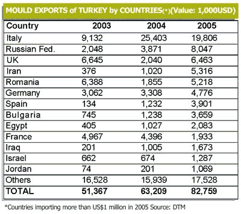

The factors which give competitive strength to the Turkish manufacturing industry are the abundance of natural resources, its geographical proximity to the export markets, developments in infrastructure and telecommunications systems, the existence of young and trained human resources, a large domestic market and the liberal economic policies in force.
According to the industry analyst Gardner, in 2006 Turkey was the world's 9th largest importer of Machine Tools. The Turkish manufacturing sector continues to enjoy sustained growth and investment in advanced multi-axis CNC Machine Tools continues at an impressive pace.
Moulds and dies industry in Turkey:
In the 70's, with the help of increasing demand from the newly developing automotive and electronics sectors, the Turkish moulding industry intensified its efforts to improve on the technological level for the domestic market and to compete at the international level. As production patterns evolved and quantities increased, the Turkish moulding industry exerted solid efforts to catch up with the needs of the manufacturing industry -the automotive, household appliances, electricelectronics and plastic sectors in particular.
With passenger car production exceeding 500,000 units, and global car and LCV manufacturers (like FIAT and Ford) choosing Turkey as production center and planning to produce more than 100,000 units annually, Turkey's moulding technology achieved the ability to serve nearly all sectors of the Turkish manufacturing industry. The Turkish moulding industry is currently trying to move ahead by means of a very qualified workforce, mostly comprised of young engineers who utilize CAD/CAM software, manufacture with hitech CNC machines, and try to estimate precisely the true dimensions of their working piece with computer aided design. Today it is estimated that more than 2,000 companies are operating in the moulds and dies industry, and the total trade volume is about US$ 1.5 billion. Nearly half of these companies are located in Istanbul? the remaining companies are mainly in Bursa, Izmir, Ankara, Eskisehir, Kocaeli and Samsun. Bursa, in particular, as a production center for the automotive industry, hosts many moulding business companies.
Exports:
European companies especially automotive manufacturers, which formerly ordered their moulds to Japan, are increasingly choosing Turkey for their mould needs. The technological development of Turkish moulders, proximity and language were the main reasons for this trend. As a result, exports of the Turkish mould industry are increasing steadily year by year. Bearing in mind that better products require better moulds, the choices of Turkish consumers, who are demanding better products and following the consumer trends of Europe and the US, can also be mentioned as a factor here. Sectoral experts mention that total exports of the moulds and dies industry is nearly US$ 200250 million. According to the Turkish Statistical Institute's (TURKSTAT) foreign trade data, Turkey's mould and die exports of were about US$ 88 million in 2006. (It was not possible to include some of the sector products and exports of engineering services in the table since there is no distinction made for them in the trade classification)

* Source: IGEME, Export Promotion Center of Turkey
Market growth generates great opportunities for Moldmaking and Tooling (January 2010)
Having Turkey as a partner country, EuroMold 2010 dedicates itself to a rapidly emerging economy that occupies the fields of automotive engineering & electronics in particular. Hence exist the enormous opportunities for Moldmaking and Tooling. The central position between Asia, Gulf States and Europe awards Turkey a significant function. Since several years EuroMold is experiencing strong interest migrating from Turkey.
Industrial promotion Turkey records an economically impressive and ongoing upward trend. For nearly 30 years Turkey's GDP has been growing at an annual average rate of 5%. Therefore, Turkey bears resemblance to India, Russia or South Korea and can be counted among other economically significant nations. Additionally, in recent years the high inflation rates ware restrained.
Istanbul is the dominant market and trading centre in Turkey now. One of the main industrial sectors is the construction of buses and tractors as well as diesel engines. Turkey is essentially European market leader in bus production.
In addition, the automotive and electronics industries are gaining significance. Every year Turkey produces more than one million vehicles indicating a strong upward trend. This industry sector employs around half a million people. Toyota, MAN, Daimler AG, Ford, Fiat, Mercedes-Benz and Renault have already established production facilities in Turkey parallel to Turkish automotive manufacturers such as Tofaþ, Etox, Temsa, BMC and Folkvan
The electronics industry portrays enormous growth rates. Turkish companies like Vestel, Beko and Profilo-Telra produce units for most well-known brands and, therefore, occupy approximately one third of all TVs being sold in Europe. Well-known manufacturers such as Bosch and Sony have also established manufacturing facilities in Turkey.
Central position
Due to its geographical location, Turkey also acts as a trading centre and a basis for economic relations between Europe, Central Asia, Gulf States and former CIS countries. Economically, there is a very close linkage between EU and Turkey, accounting for approximately half of Turkish imports. Regarding the EU, Turkey has transformed into one of the most important markets. More importantly is that Germany is by far the largest trading partner of Turkey.
Turkish Moldmaking and Tooling
Turkey, in relation to Moldmaking and Tooling, becomes exceptionally attractive to the European market. Furthermore, partnerships with Turkish suppliers become more and more frequently. At this point, specialised Mold & Tool manufacturer have evolved, which are similarly inexpensive compared with manufacturers deriving from Asia. However, they are situated at Europe's doorstep. Numerous Western European mold manufacturers have recognised this trend and, consequently, have already established branches and co-operations in Turkey.
Source:
EuroMold 2010 welcomes Turkey as a partner country > www.euromold.com/index.php?id=246&l=1
For more information:
Reports from Export Promotion Center of Turkey
Company Directory (from TurkCADCAM.net)
Links:
Articles:
Beyond "BRIC": what about Turkey? As costs begin to rise in new EU member states, nearby outsider Turkey looks to become an increasingly important automotive manufacturing hub
Automotive Design & Production, April, 2007 by Erkut Uludag
"Turkey should not be overlooked, both as an attractive market as well as a low-cost, high-quality manufacturing hub"
"While Turkey is at a cost disadvantage compared to China or India, it enjoys a more strategic location, especially with respect to Europe. Another Turkish advantage over competing low cost regions is the regulatory environment, including intellectual property protections matching EU standards as well as more flexibility in terms of investments (JVs, etc.). Additionally, Turkish automotive quality is greater than other low cost regions and is competitive to high wage areas."
|